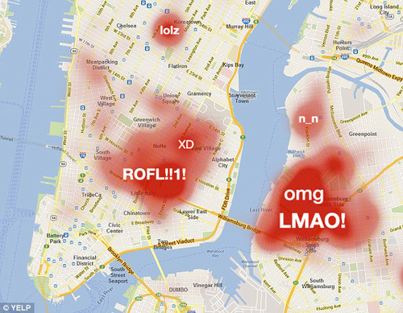
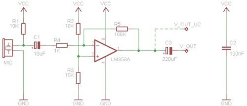
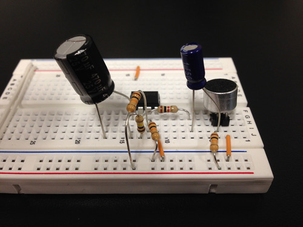
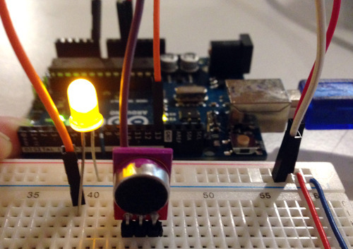
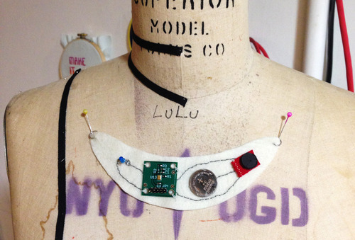
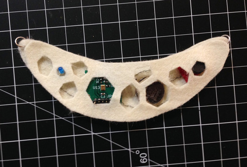
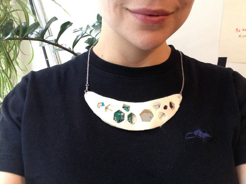
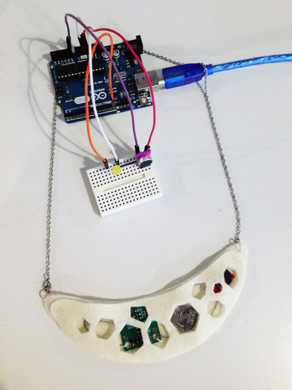

This is a project for a wearables class at NYU. This week we were asked to think about our sense of self. While thinking about self it became quickly apparent that my laugh is my most distinguishable feature. Recently I laughed during a Thesis Tuesday while first years are required to be off the floor. It was a huge snowball effect that started with angry stares and muttering, was later overheard in faculty venting, then, after six days, resulted in an email to all first years in a displeased tone. It was not at all the first time my laugh has gotten me in trouble. Thinking about my laugh this week has made me realize more about
Many of my friends have used my laughter to find me in a noisy crowded space, even if they weren’t initially aware I was there or listening for me. If it is that distinct I think there must be some way to sense it. And if people who know me can track my location with my laughter, I should be able to as well.
My wearable is a necklace that detects the location of my laughter. It would allow me to log and map data about my laugh.
Here is a mocked up view of how my laughter could be tracked using the Google Maps API.

Many social apps like Twitter can access your GPS location, so a fun interaction could trigger a tweet with a tagged location. I like this idea because my laugh identifies me even when I don’t mean to draw attention to myself. This is doing the same thing, but using technology to passively send that information.
I initially thought about the possibility of using a pulse sensor to track changes in the throat, but shifted quickly to an electret microphone. It is easy to use these mics as sensors to detect volume, but it’s hard to differentiate it from other loud sounds. Luckily, in my Basic Analog Circuits class we were building small amplifiers.


As beautiful as this was, I am not sure it’s something that can be sewn. Luckily we live in the future where small affordable prebuilt versions come with surface mounted resistors and capacitors. I was able to quickly hook this up to an Arduino and LED.

I discovered the uSpeech voice detection library for Arduino, which I started playing with. The library uses phonemes, so I had to calibrate and find the phonemes that represent my laugh. Luckily, ‘h’ and 'o’ seem pretty accurate.
In order to keep the mic close to my mouth I decided on a necklace, but since I haven’t figured out how to use the uSpeech library with Gemma or Flora, I can only build a low-fi prototype. I chose a crescent shape that I think looks like a smile, and comfortable felt.
Design inspiration

Faking the circuit
I chose a hexagonal design to have a peek into the inner working. Also, I think it reflects my personal style.


Wearing my finished prototype

Form & Function